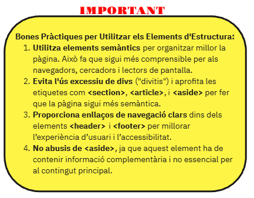
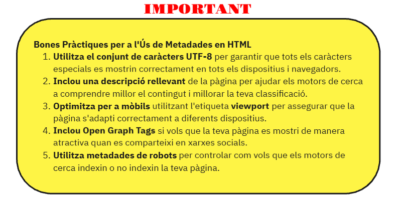

Atributs principals
src: Especifica la ruta de la imatge.
alt: Proporciona un text alternatiu per a la imatge, útil per a l'accessibilitat i SEO.
width i height: Controlen la mida de la imatge.

És una evolució important respecte a les versions anteriors d'HTML, introduint noves etiquetes i funcionalitats que permeten una millor gestió del contingut multimèdia, formularis avançats, i millores en la semàntica de la pàgina web.
<section>: Ús per a agrupar contingut relacionat dins d'una pàgina.
<article>
: Representa un bloc de contingut autònom, com un article d'un blog, una notícia o un post que pot existir independentment del lloc web.
<aside>
: Defineix contingut relacionat amb el contingut principal però no essencial. Normalment s'utilitza per a barres laterals, anuncis, o informació complementària.
<header>
i <footer>: Etiquetes per a definir les capçaleres i peus de pàgina.
<nav>
: Específica per a les barres de navegació del lloc web.
<figure>
i <figcaption>: Agrupa elements multimèdia (com imatges o vídeos) i les seves descripcions.

Els formularis són una de les eines més importants d'HTML perquè permeten als usuaris enviar dades a un servidor. Amb HTML5, els formularis han guanyat noves funcionalitats que milloren la seva usabilitat i validació.
Un formulari es crea amb l'etiqueta <form>, que actua com el contenidor de tots els elements d'entrada (text, botons,seleccions, etc.).
L'etiqueta <imput> és l'element més versàtil per crear camps d'entrada. El tipus de camp es defineix amb l'atribut type.
L'etiqueta <label> s'utilitza per a etiquetar camps de formulari i millorar l'accessibilitat.
Per a textos llargs, com comentaris o descripcions, s'utilitza <textarea>, que permet una àrea de text més gran.
<select> es fa servir per crear llistes desplegables de selecció. Cada opció dins de la llista es defineix amb <option>.
Atribut multiple per les llistes desplegables de selecció. Permet seleccionar múltiples opcions en una llista de selecció.
S'utilitza per crear botons d'enviament o d'altres accions dins del formulari.
Radio buttons permeten seleccionar una opció d'un conjunt de possibilitats.
Els checkboxes permeten seleccionar diverses opcions independents.
HTML5 introdueix una sèrie de nous atributs i tipus d'entrada per validar els formularis de manera nativa, sense la necessitat de JavaScript.
Atribut required: Marca un camp com a obligatori.
Atribut pattern: Permet definir un patró amb expressions regulars per validar l'entrada de l'usuari.
Aquests tipus permeten validar i mostrar els camps de formulari de manera més adequada segons el tipus de dades que esperes obtenir de l'usuari:
<input type="password">
<input type="email">
<input type="url">
<input type="tel">
<input type="numer">
<input type="range">
<input type="date">
<input type="time">
<input type="datetime-local">
<input type="month">
<input type="week">
<nput type="color">
<input type="file">
HTML5 ha introduït maneres noves i eficients d'integrar multimèdia a les pàgines web, incloent imatges, vídeos, i àudio sense necessitat de plug-ins externs com Flash. Això ha millorat tant la compatibilitat com la usabilitat en múltiples dispositius, especialment en mòbils.
L'etiqueta <img> s'utilitza per inserir imatges en una pàgina web. Aquesta etiqueta és auto-tancada (no té etiqueta de tancament).
Atributs principals
src: Especifica la ruta de la imatge.
alt: Proporciona un text alternatiu per a la imatge, útil per a l'accessibilitat i SEO.
width i height: Controlen la mida de la imatge.
HTML5 introdueix l'etiqueta <video> per inserir vídeos de manera nativa a la pàgina web, sense necessitat de plug-ins externs.
Atributs principals
src: Ruta del fitxer de vídeo.
controls: Mostra els controls del vídeo (play, pause, volum, etc.).
autoplay: Fa que el vídeo es reprodueixi automàticament quan es carrega la pàgina.
loop: Fa que el vídeo es reprodueixi en bucle.
muted: Reprodueix el vídeo sense so.
Etiqueta <audio>
De manera similar als vídeos, HTML5 permet inserir àudio natiu amb l'etiqueta <audio>.
Atributs principals
src: Ruta del fitxer d'àudio.
controls: Mostra els controls de reproducció d'àudio (play, pause, volum, etc.).
autoplay: Reprodueix automàticament l'àudio en carregar la pàgina.
loop: Fa que l'àudio es reprodueixi en bucle.
muted: Reprodueix l'àudio sense so inicialment.
Proporciona formats de fitxer compatibles amb els diferents navegadors per a àudio i vídeo (com MP4, WebM, OGG).
Utilitza l'atribut alt per a les imatges per millorar l'accessibilitat i optimitzar el SEO.
No facis ús de l'atribut autoplay en àudio i vídeo, ja que pot interrompre l'experiència de l'usuari, especialment en dispositius mòbils.
Controla la mida dels fitxers multimèdia per evitar temps de càrrega llargs i millorar l'experiència de l'usuari.
L'etiqueta <center> s'utilitzava en versions antigues d'HTML per centrar el contingut dins d'una pàgina web, tant text com imatges o altres elements.
L'etiqueta <div> (abreviatura de "division") s'utilitza per crear contenidors de bloc en una pàgina HTML. És una etiqueta de nivell de bloc, la qual cosa significa que ocupa tot l'ample disponible i comença en una línia nova.
No té significat semàntic en si mateixa; simplement agrupa altres elements, com text, imatges o altres etiquetes, i sol ser estilitzada amb CSS.
És útil per organitzar i dissenyar diferents seccions d'una pàgina web.
L'etiqueta lt;span>& és una etiqueta inline (en línia) que serveix per estilitzar o manipular> petites porcions de text o contingut dins d'una pàgina. A diferència de <div>, no ocupa tot l'ample disponible, sinó que ocupa només l'espai necessari.
També és una etiqueta no semàntica, usada principalment per aplicar estils o funcionalitat a un grup específic d'elements dins d'un text.
Aquest és un text en vermell de proba.
En HTML5, l'ús de <hr>l'etiqueta no és només decoratiu. Té un valor semàntic per indicar un canvi de tema o una ruptura en el flux del document, ajudant tant als motors de cerca com a les eines d'accessibilitat a entendre millor l'estructura del contingut.
L'etiqueta <template> s'utilitza per definir fragments d'HTML reutilitzables que no es mostren immediatament quan la pàgina es carrega. El contingut dins d'un <template> no s'afegeix al document fins que es manipula explícitament amb JavaScript, cosa que permet crear plantilles que es poden clonar i inserir al DOM de manera dinàmica.
Aquest element és ideal quan vols tenir estructures HTML preparades que podràs afegir al document en temps real,sense que aquestes siguin rendides o visibles inicialment. Això proporciona molta flexibilitat per a aplicacions dinàmiques.
<iframe> (inline frame) és una etiqueta HTML que permet inserir una pàgina HTML dins d'una altra pàgina web. És una manera més moderna i segura d'incrustar contingut extern, com altres pàgines web, vídeos, formularis o mapes, dins d'una pàgina principal.
Els iframes s'utilitzen sovint per a continguts dinàmics com vídeos de YouTube, Google Maps, o integracions de serveis externs.
L'etiqueta <iframe> es defineix dins del cos del document i es pot personalitzar amb atributs com width, height, src, i frameborder.
Les metadades són informació que es col·loca dins del document HTML per descriure característiques del document com l'autor, la descripció, les paraules clau o les instruccions per a motors de cerca i navegadors.
Les metadades s'inclouen dins de l'etiqueta <head> del document HTML, però no es mostren directament a la pàgina web. Aquestes dades ajuden els navegadors, motors de cerca, i aplicacions a comprendre millor el contingut de la pàgina.
Charset (Conjunt de caràcters)
Defineix el conjunt de caràcters utilitzat en el document, com UTF-8, que suporta gairebé tots els caràcters.
Viewport (Responsive Design)
Ajuda a configurar la visualització d'una pàgina web en dispositius mòbils, garantint que el contingut s'adapti correctament a diferents mides de pantalla.
Descripció de la pàgina
Proporciona una breu descripció del contingut de la pàgina. Aquesta informació és utilitzada pels motors de cerca per mostrar descripcions en els resultats de cerca.
Paraules clau (Keywords)
Defineix un conjunt de paraules clau que descriuen el contingut de la pàgina. Encara que no és tan utilitzat pels motors de cerca actualment, pot ser útil per altres aplicacions.
Autor de la pàgina
Indica el nom de l'autor o empresa responsable del contingut de la pàgina web.
Instruccions per a Robots de Cerca
Indica als motors de cerca com indexar i rastrejar el contingut de la pàgina.
Open Graph Tags (per a xarxes socials)
Els Open Graph Tags són metadades utilitzades per les xarxes socials (com Facebook o Twitter) per mostrar previsualitzacions personalitzades quan es comparteix un enllaç.
Metadades per a aplicacions mòbils
Pots utilitzar metadades per millorar com es veu la pàgina quan es desa a la pantalla d'inici en un dispositiu mòbil.
Favicon
Tot i que no és un <meta>, el favicon és una metadada visual important que es mostra a la pestanya del navegador.
lang (atribut)
L'atribut lang es defineix dins de l'etiqueta <html> per especificar l'idioma general de la pàgina, o dins de qualsevol altra etiqueta HTML per marcar un idioma específic dins d'una part del contingut.
